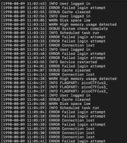
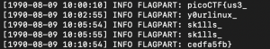

This CTF provided a server.log file and stated the flag is scattered and repeated in the log
File preview:

Discovered flagparts in the log contain FLAGPART: in the line
Used grep to minimize and simplify. Results:

Obtained flag: picoCTF{us3_y0urlinux_sk1lls_cedfa5fb}